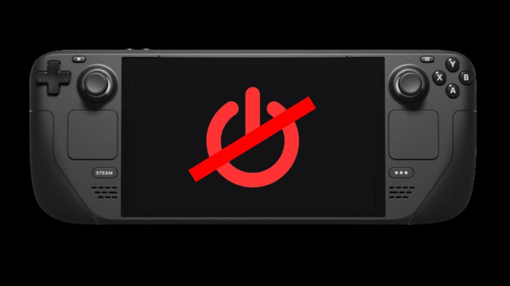

Steam Deck no enciende
{kind=link}
Es muy probable que alguna vez hayas ido a encender tu Steam Deck y te haya resultado imposible. Eso es algo que suele ocurrir y, afortunadamente esto tiene una solución, por lo que en este artículo te voy a lo que debes hacer si tu Steam Deck no enciende:
¿Qué hacer si mi Steam Deck no enciende?
Antes de empezar, hay que mencionar el hecho de que puede ser que la consola no se encienda pero sí escuchemos el sonido que emite cuando se enciende e intente arrancar pero se apaga. Si tu caso es este último, estás de suerte, ya que la Steam Deck no está averiada. En cualquier caso, realiza los siguientes pasos:
- Conecta la consola al cargador y verifica que la luz blanca que está al lado del conector se enciende. Si esta no se enciende puede que se trate de algún problema mayor que requiera una reparación de hardware.
- Deja pulsado el botón de encender durante 10 segundos. Tras estos 10 segundos debería escucharse el sonido que emite la consola cuando se enciende. Si no se enciende automáticamente, vuelve a pulsar el botón de encender.
- Si nada de esto ha funcionado, contacta con el soporte de Steam.
Espero que este artículo os haya servido. ¡Disfrutad de Steam Deck!.